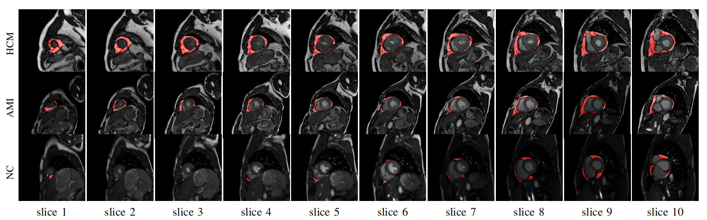
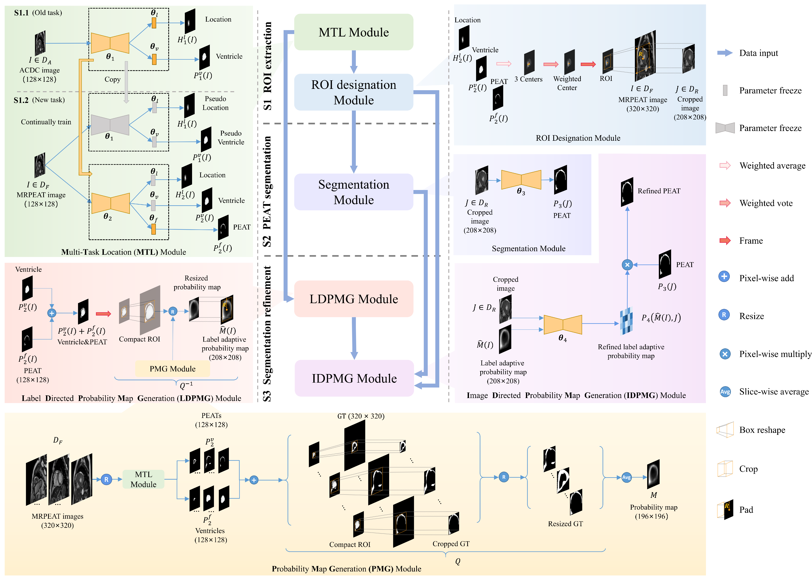

- A cardiac SA MR image dataset is released with PEAT being labelled by a radiologist and checked by another and a multiple-stage deep learning model is proposed to segment PEAT in the dataset. 
- Ventricle segmentation and location are adopted as two additional tasks to assist the model in locating PEAT by ensuring surroundings meet with clinical anatomy.
- Continual learning is used to transfer knowledge from existing datasets with cardiac ventricle labels to release additional requirements on labelling our dataset.
- A prior guidance strategy is proposed to refine PEAT segmentation results by retrieving knowledge from ground truth labels and image contents. 
- The segmentation model is qualitatively and quantitatively compared with state-of-the-art models on the dataset we released.
Segmentation of Pericardial Adipose Tissue in CMR Images: a Benchmark Dataset MRPEAT and a Triple-Stage Network 3SUnet
The increased pericardial adipose tissue (PEAT) is associated with a series of cardiovascular diseases (CVDs) and metabolic syndromes. Therefore, particular emphasis should be placed on PEAT quantification and its role in CVD development and progression. In addition, given the more promising clinical value of quantifying PEAT in cardiovascular magnetic resonance (CMR) images than computed tomography (CT) images in CVD assessment, an accurate and time-saving PEAT measurement based on CMR is indispensable.
Motivation
However, almost all existing studies are based on computed tomography (CT) diagnostic modality. Although there is a study segmenting EAT in CMR images in the standard four-chamber(4CH) view, this dataset is unavailable and cardiac short axis (SA) MR images are more prevalent in CVD diagnosis. Segmentation of PEAT in cardiac SA MR images still an pending problem due to the following challenges, 1) the absence of public CMR datasets, 2) diversity in shape, size and location of PEAT, 3) severe class imbalance , and 4) heavily overlapping in intensity.
To address the above challenges, we release a benchmark dataset and propose a deep learning model to segment PEAT in cardiac SA MR images. The main contributions of our paper are given as follows.

More informations are referred in our paper!
Sources
Now!
Dataset can be downloaded in Our Dataset_site!
Codes can be downloaded in Our Github!